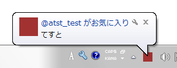

Liberfy for Windows
トップ
ダウンロード
ライブラリ
機能
ヘルプ
機能の紹介
MP動画のアップロードが可能
画像と同じようにでツイートにMP4動画を添付することができます。
※ 動画の解像度が1280×720以下、かつフレームレートが40fps以下、長さが30秒以内である必要があります。

バルーン通知
通知音とバルーン通知を組み合わせることで、他のユーザからのアクションを瞬時に把握できます。